“Sala Situacional COVID-19 Perú.” https://covid19.minsa.gob.pe/sala_situacional.asp.
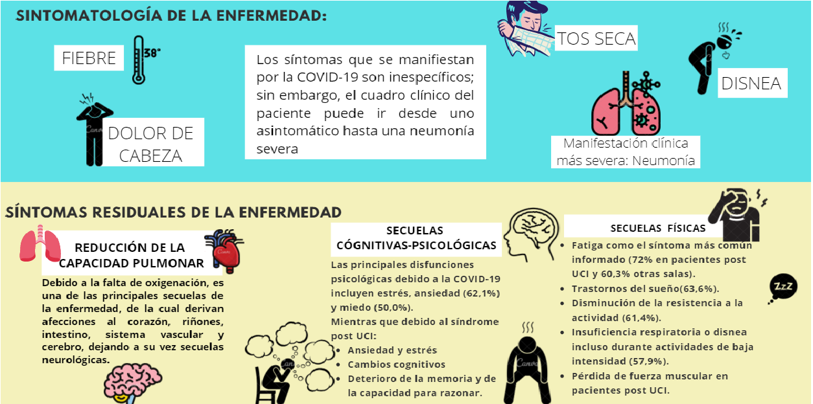T. Quispe, R. Ticse, M. Gálvez, and L. Varela, “Rehospitalización en adultos mayores de un hospital de Lima, Perú,” Revista Peruana de Medicina Experimental y Salud Pública, vol. 30, no. 4, pp. 7–8, 2014, doi: 10.17843/rpmesp.2013.304.245.
A. S. Ojo, S. A. Balogun, O. T. Williams, and O. S. Ojo, “Pulmonary Fibrosis in COVID-19 Survivors: Predictive Factors and Risk Reduction Strategies,” Pulmonary Medicine, vol. 2020, pp. 1–10, Aug. 2020, doi: 10.1155/2020/6175964.
M. G. Ceravolo et al., “Rehabilitation and Covid-19: the Cochrane Rehabilitation 2020 rapid living systematic review.,” European journal of physical and rehabilitation medicine, Jul. 2020, doi: 10.23736/S1973-9087.20.06501-6.
M. Piquero Cuevas, “Secuelas psicológicas e impacto emocional tras el alta de una Unidad de Cuidados Intensivos,” 2017, [Online]. Available: http://hdl.handle.net/10902/11609.
 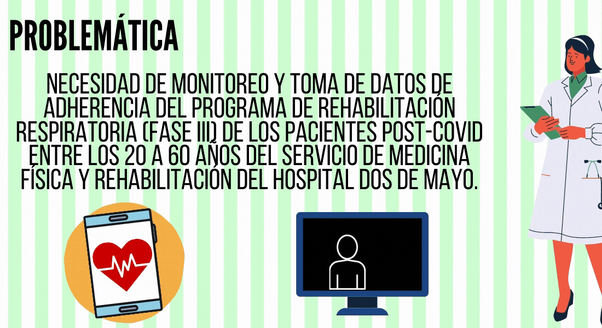
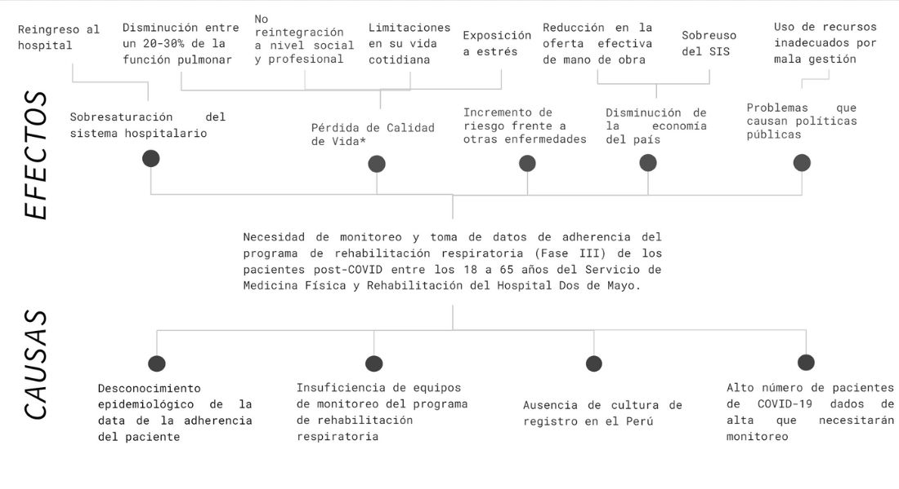
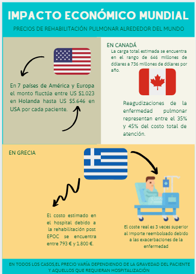
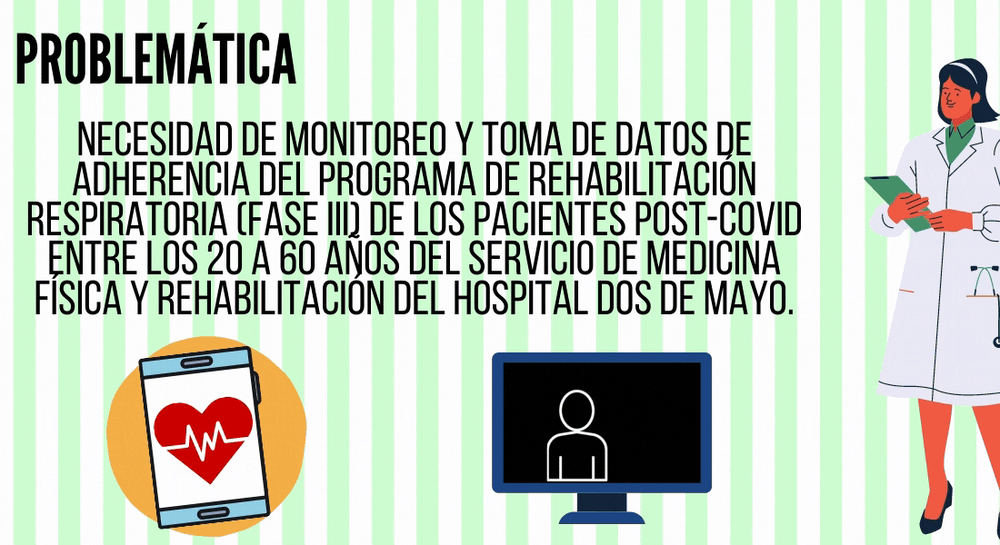
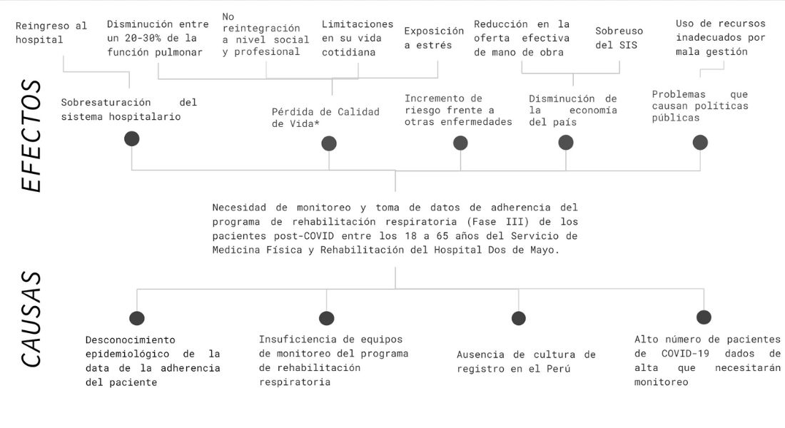
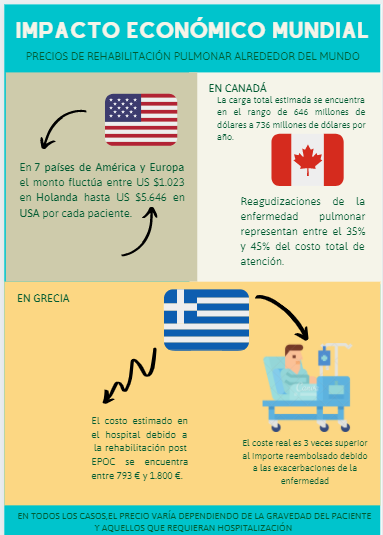
C. REYES G, R. SILVA O, and F. SALDÍAS P, “Costo-efectividad de la rehabilitación respiratoria en pacientes con enfermedad pulmonar obstructiva crónica,” Revista chilena de enfermedades respiratorias, vol. 27, no. 2, pp. 153–158, Jun. 2011, doi: 10.4067/S0717-73482011000200012.
N. Mittmann, L. Kuramoto, S. J. Seung, J. M. Haddon, C. Bradley-Kennedy, and J. M. FitzGerald, “The cost of moderate and severe COPD exacerbations to the Canadian healthcare system,” Respiratory Medicine, vol. 102, no. 3, pp. 413–421, Mar. 2008, doi: 10.1016/j.rmed.2007.10.010.
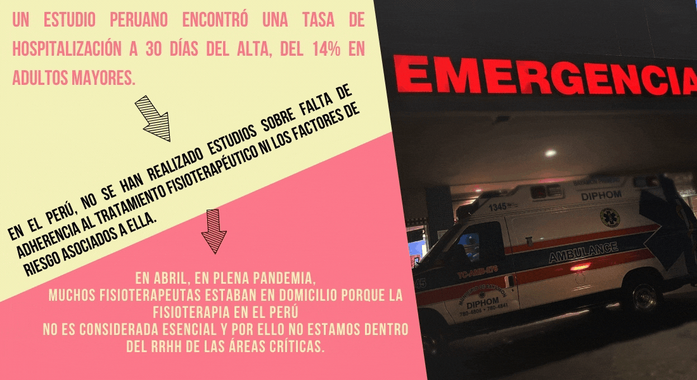T. Quispe, R. Ticse, M. Gálvez, and L. Varela, “Rehospitalización en adultos mayores de un hospital de Lima, Perú,” Revista Peruana de Medicina Experimental y Salud Pública, vol. 30, no. 4, pp. 7–8, 2014, doi: 10.17843/rpmesp.2013.304.245.
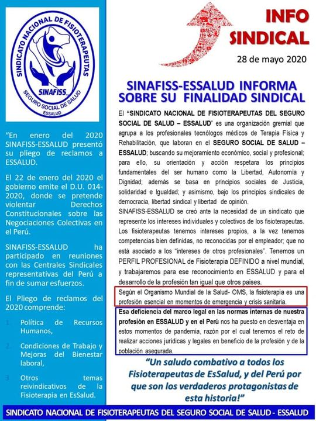SINAFISS/ESSALUD, “No Title,” Acerca de la fisioterapia respiratoria,essalud aprueba el teletrabajo para Tm. Terapia física, 2020. http://www.findglocal.com/PE/Lima/170409313829289/SINAFISS-EsSalud.
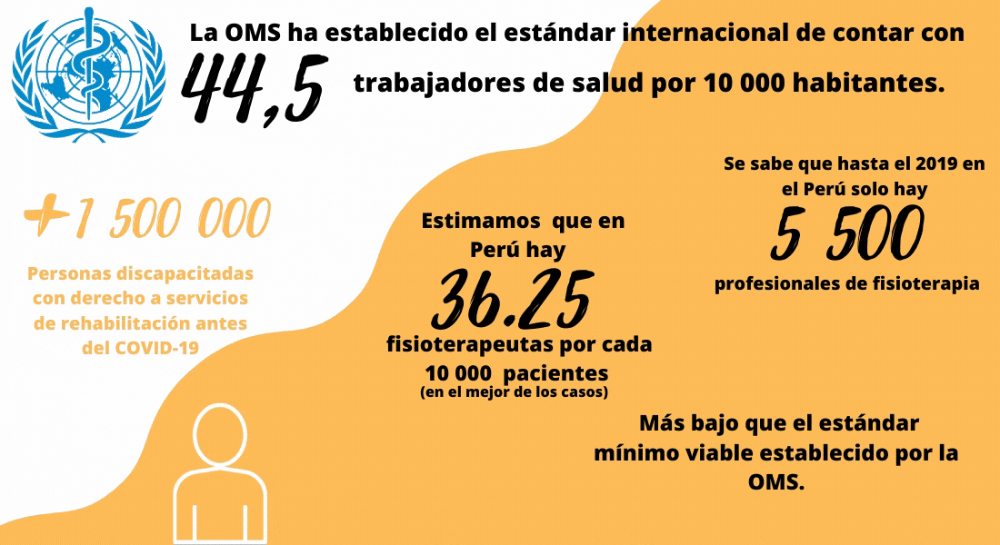Congreso de la República del Perú, “Ley general de la persona con discapacidad,” Diario oficial El Peruano, p. 30, 2012, [Online]. Available: http://www2.congreso.gob.pe/Sicr/TraDocEstProc/Expvirt_2011.nsf/Repexpvirt?OpenForm&Seq=3&Db=201100377&View.
INEI, “Nota de prensa; personas con discapacidad,” No 178 – 02 Diciembre 2013, no. 99, pp. 1–2, 2013.
G. M. Arrescurrenaga, “A fisioterapia no Peru,” Fisioterapia e Pesquisa, vol. 26, no. 4, pp. 337–338, Dec. 2019, doi: 10.1590/1809-2950/00000026042019.
F. Inga-Berrospi and C. Arosquipa Rodríguez, “Avances en el desarrollo de los recursos humanos en salud en el Perú y su importancia en la calidad de atención,” Revista Peruana de Medicina Experimental y Salud Pública, vol. 36, no. 2, p. 312, Jun. 2019, doi: 10.17843/rpmesp.2019.362.4493.
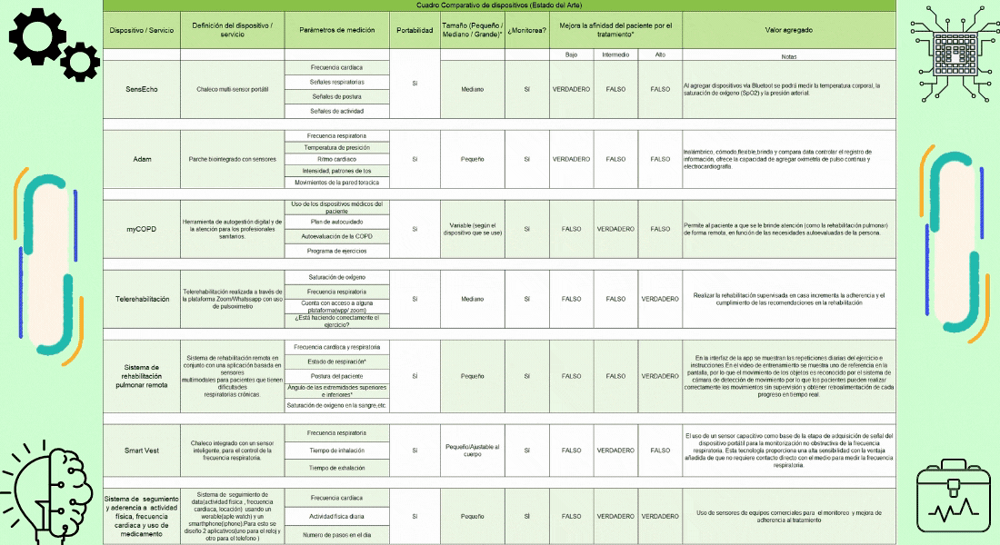] D. Cao et al., “Application of a Wearable Physiological Monitoring System in Pulmonary Respiratory Rehabilitation Research,” in 2018 11th International Congress on Image and Signal Processing, BioMedical Engineering and Informatics (CISP-BMEI), Oct. 2018, pp. 1–6, doi: 10.1109/CISP-BMEI.2018.8633113.
“myCOPD for self-management of chronic obstructive pulmonary disease,” National Institute for Health and Clinical Excellence - Advice, pp. 1–10, 2020, [Online]. Available: https://www.nice.org.uk/guidance/mib214/resources/mycopd-for-selfmanagement-of-chronic-obstructive-pulmonary-disease-pdf-2285965451548357.
H. Jeong, J. A. Rogers, and S. Xu, “Continuous on-body sensing for the COVID-19 pandemic: Gaps and opportunities,” Science Advances, vol. 6, no. 36, p. eabd4794, Sep. 2020, doi: 10.1126/sciadv.abd4794.
E. Perú, “EXPERIENCIA DE MANEJO EN TELEREHABILITACIÓN DE LOS PACIENTES CON COVID 19 H V D P,” 2020. https://www.youtube.com/watch?v=MRpKypa_T_c.
C.-K. Tey, J. An, and W.-Y. Chung, “A Novel Remote Rehabilitation System with the Fusion of Noninvasive Wearable Device and Motion Sensing for Pulmonary Patients,” Computational and Mathematical Methods in Medicine, vol. 2017, pp. 1–8, 2017, doi: 10.1155/2017/5823740.
C. Mueller, B. Stollfuss, A. Roitenberg, J. Harder, and M. J. Richter, “Evaluation of Clinical Outcomes and Simultaneous Digital Tracking of Daily Physical Activity, Heart Rate, and Inhalation Behavior in Patients With Pulmonary Arterial Hypertension Treated With Inhaled Iloprost: Protocol for the Observational VENTASTEP Stud,” JMIR Research Protocols, vol. 8, no. 4, p. e12144, Apr. 2019, doi: 10.2196/12144.
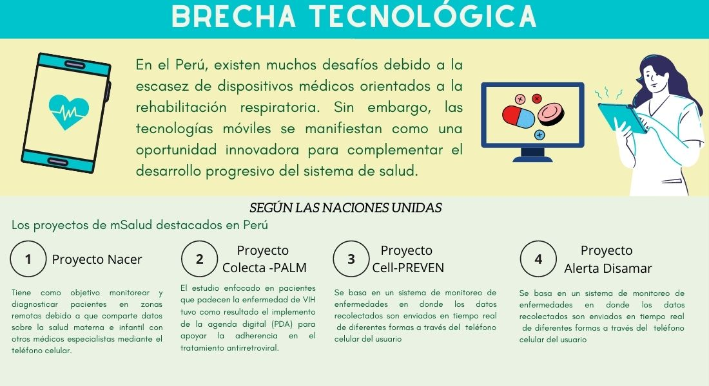E. F. Ruiz, O. J. Ponce, and W. H. Curioso, “Sección Especial TECNOLOGÍAS MÓVILES PARA LA SALUD PÚBLICA EN EL PERÚ : LECCIONES APRENDIDAS MOBILE HEALTH FOR PUBLIC HEALTH IN PERU :,” vol. 32, no. 2, pp. 3–4, 2015.
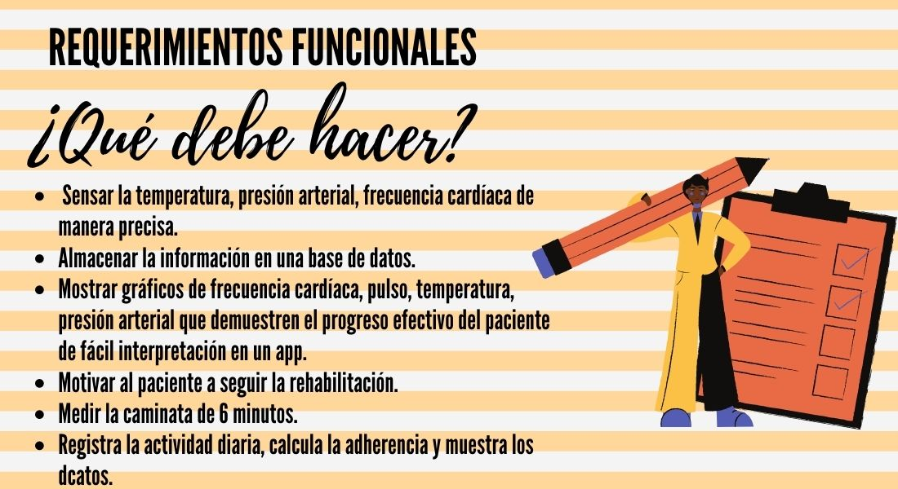 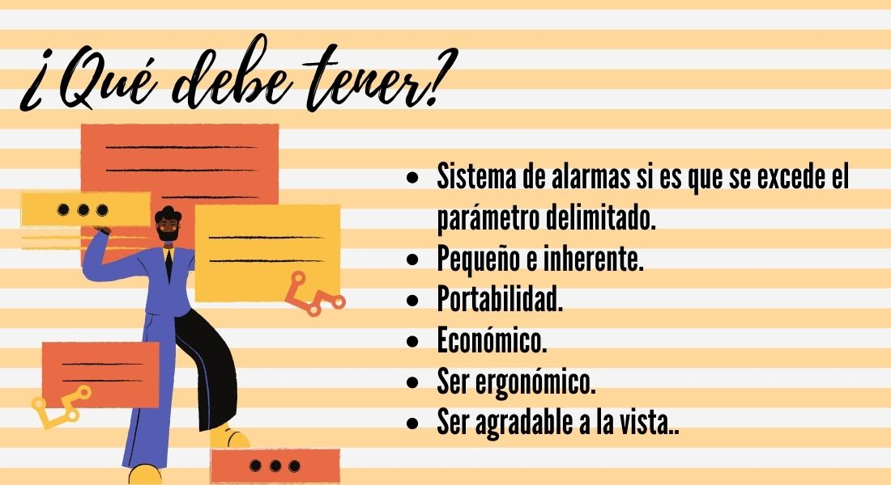